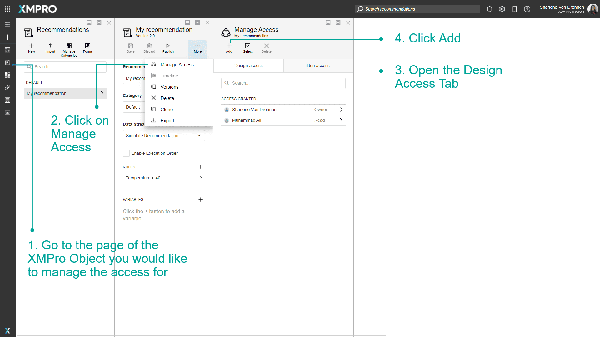
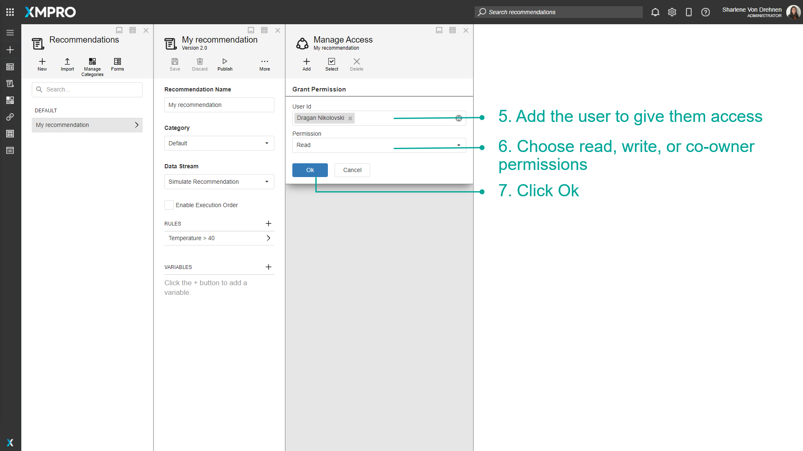
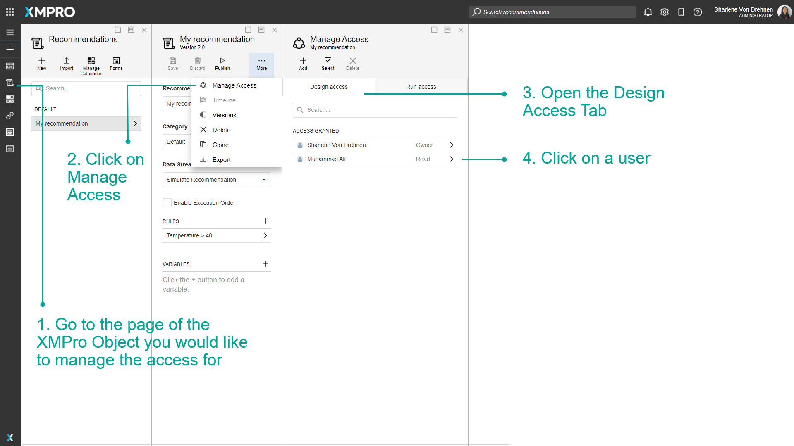
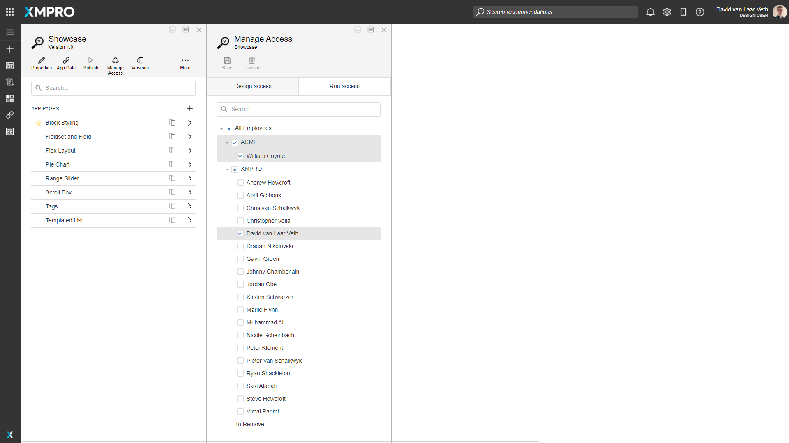
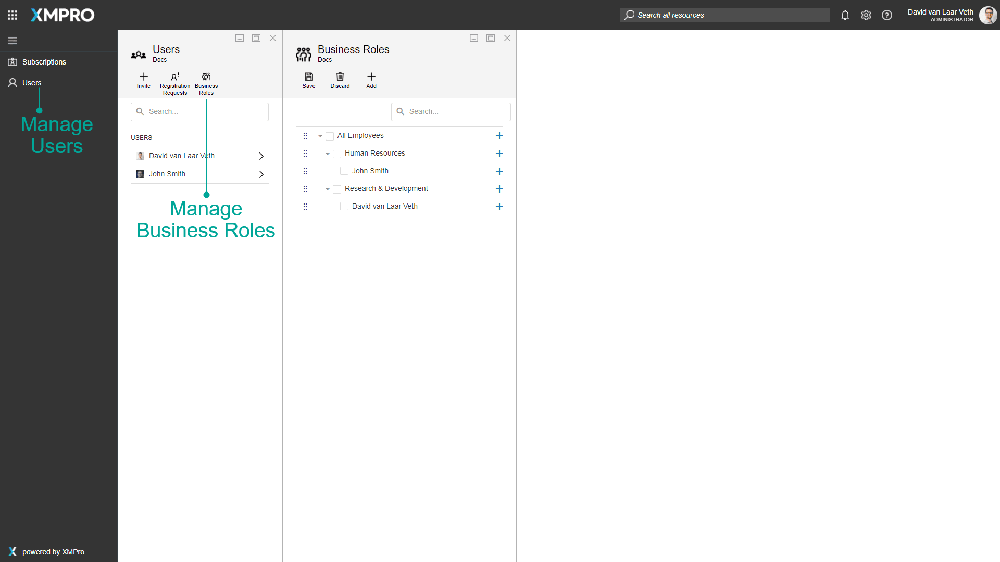
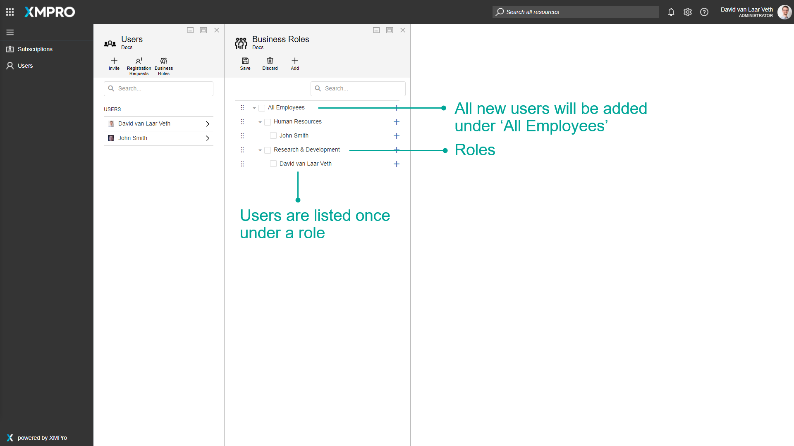
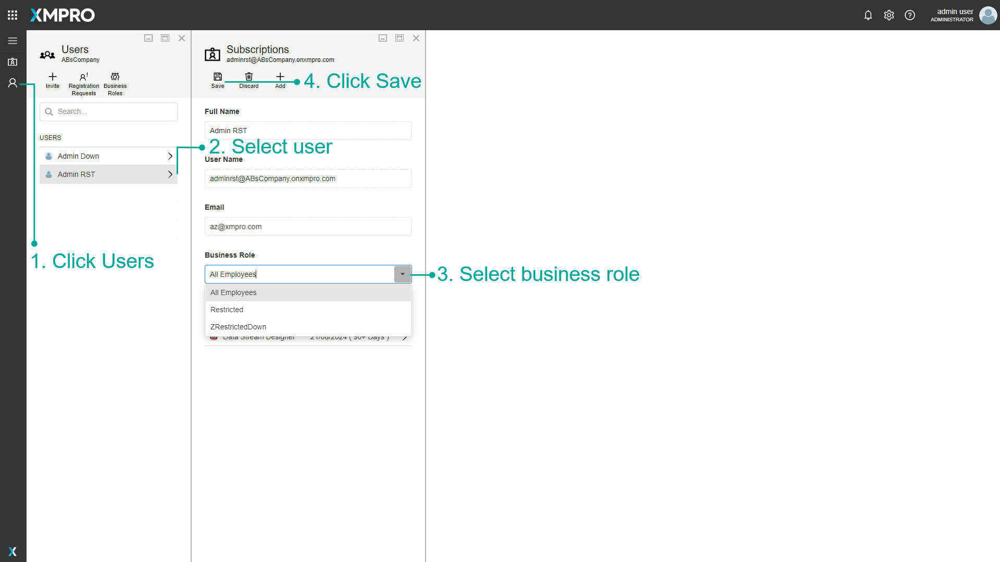

Manage Access
Managing the access of users is important as it can improve the security of XMPro Objects. Permissions are given to users only based on what they need to do, for example, someone who only needs to view something can be given read access. This can hide additional functionality that users do not need and also protect against unintentional tampering.
Whether or not you can design a particular data stream, application, or other XMPro Objects is determined by the permissions that you have on it. The person that originally created the XMPro Object will be listed as the owner and can never lose his/her right to access it unless it is deleted. Other users can then be assigned read or read-and-write access.
Grant Permissions
Granting permissions makes it easier for multiple users to collaborate on one particular XMPro Object. It also makes it easier to grant permissions to multiple users who are only allowed to view or read it without making changes, possibly to just give feedback or to discuss part of the XMPro Object.
Permissions: Owner
The Owner has full permission to make any changes required to the XMPro Object. The owner is also allowed to give other users access or change the permissions of existing users.
Permissions: Co-Owner
The Co-Owner has full permission to make any changes required to the XMPro Object. The Co-Owner is also allowed to give other users or change the permissions of existing users, except removing or changing the Owner's permissions.
Permissions: Write
A person who has Write access will be allowed to view, edit, publish and unpublish the XMPro Object.
Permissions: Read
The Read permission will allow a person to view the XMPro Object, but making any changes to the XMPro Object will be prohibited.
Permission Matrix
| Permission/Operation | Owner | Co-Owner | Write | Read |
|---|---|---|---|---|
| View | ✓ | ✓ | ✓ | ✓ |
| Publish/Unpublish | ✓ | ✓ | ✓ | ✗ |
| Edit | ✓ | ✓ | ✓ | ✗ |
| Delete | ✓ | ✓ | ✗ | ✗ |
| Manage Versions | ||||
| • View | ✓ | ✓ | ✓ | ✓ |
| • Create/Copy | ✓ | ✓ | ✓ | ✗ |
| • Delete | ✓ | ✓ | ✗ | ✗ |
| Manage Access | ✓ | ✓ | ✗ | ✗ |



Actions on the Manage Access page
| Action | Description |
|---|---|
| Add | Adds a user. |
| Select | Selects multiple users. |
| Edit | Edits the permissions of a particular user. |
| Cancel | Discards any changes made to the user's permissions up to that point. |
| Delete | Deletes a user. |
Manage Run Access
Warning
For Apps, if a User has Design Access they will also automatically have access to run the App in view mode. However, for Recommendations, a User can only view Recommendation Alerts if they or their Business Role has Run Access, regardless of whether they have Design Access to the Recommendation.

Business Roles (Company Administrator)
Business Roles are a hierarchical representation of the different areas of an organization. When managing access for XMPro Products, the Business Roles defined in Subscription Manager are used.
Business Roles are managed by the Administrator of a Company through the Users page.

All new users will automatically be added under the default 'All Employees' Business Role. Users can be moved, but not deleted from this list. A User can only be listed once underneath one Business Role.

Business Role of a User
Alternatively, a user's business role can also be managed from the user blade. See Change Business Role.

Sync Business Roles from Azure AD
If Azure AD has been linked as your External Identity Provider, you can specify a claim name that Azure AD or the graph API will pass to Subscription Manager.
When a user logs in, Subscription Manager will look at the value specified in this Claim and assign them to the Business Role with the same name.
Note
If a Business Role with the same name doesn't exist, it will be created as a child under the default Business Role, 'All Employees'.
Actions on the Manage Run Access page
| Action | Description |
|---|---|
| Save | Saves any changes made to the Manage Run Access up to this point. |
| Discard | Discards any changes made to the Manage Run Access up to this point. |
Further Reading
Last modified: June 12, 2025